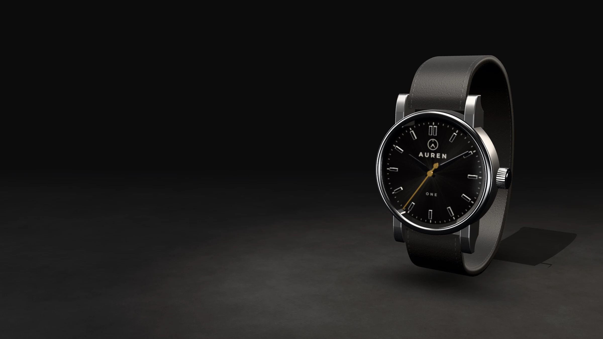
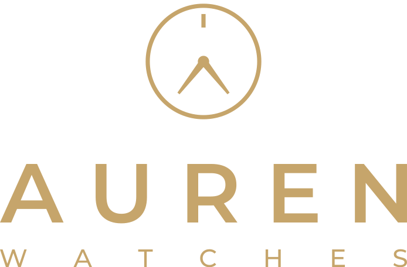
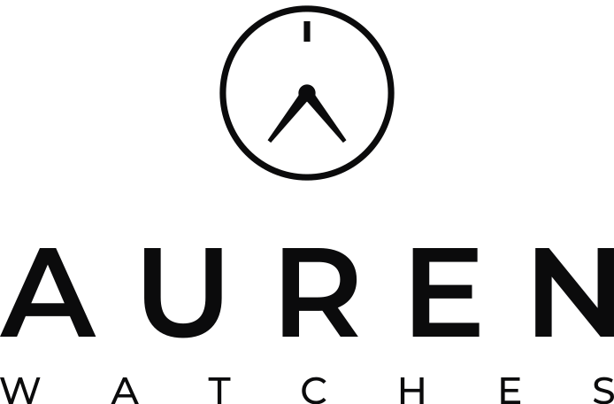

Relojes de alta gama. Lujo discreto.TIME, REDEFINED.
Jordi Cayo Almenar · Comercio Electrónico · 2º ACO · Práctica 2.1


Relojes diseñados para durar y vendidos directamente en la tienda online de la marca, sin intermediarios.
En la tienda online: modelo, color de esfera y correa.
En su estuche, con la tarjeta de garantía de la marca.
Garantía y servicio posventa según las condiciones de la tienda.
Tres agujas. Lo esencial.
Cronógrafo de dos contadores.
De vestir, segundero a las seis.
Todo negro, detalles dorados.
Marca de relojes de alta gama con tienda online propia. Un nombre corto, que se pronuncia igual en cualquier idioma y que se apoya en dos ideas:
Del latín aurum: el dorado champán de la marca y el valor de las cosas hechas para durar.
Un reloj que se nota sin llamar la atención. El verdadero lujo está en los detalles y en la precisión.

Un símbolo geométrico y simétrico: el aro de la esfera, el índice de las doce y dos agujas. Debajo, AUREN en mayúsculas y WATCHES más pequeño y espaciado.
Las dos agujas se unen en el eje y dibujan la A de AUREN. El índice de las doce marca el punto de partida: el tiempo, redefinido.
#0B0B0C
RGB 11, 11, 12
#F7F7F5 · fondos
RGB 247, 247, 245
#85878A · textos
RGB 133, 135, 138
#C6A56B · acentos
RGB 198, 165, 107
#202124
RGB 32, 33, 36
El negro y el blanco dominan. El dorado se reserva para detalles, botones destacados e iconos.
Geométrica y elegante. Para el logotipo y los títulos, en mayúsculas y con espaciado amplio entre letras.
Clara y moderna. Para los textos, la navegación, los precios y los botones de la tienda.
Logo en la cabecera, fotografía a sangre y botones en dorado champán.
Fichas limpias: modelo, precio y colores. Precios de ejemplo.
Foto de perfil de @aurenwatches: el símbolo dorado sobre negro.
Estuche negro con filete dorado, tarjeta de garantía y bolsa.
El logotipo está dibujado en vector (SVG), en tres colores y en dos composiciones: